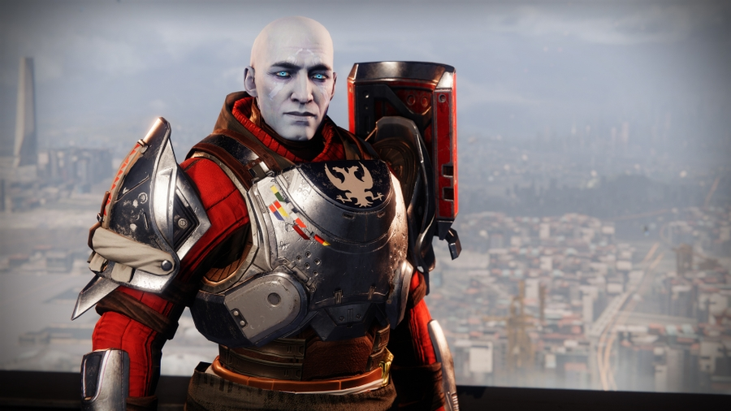
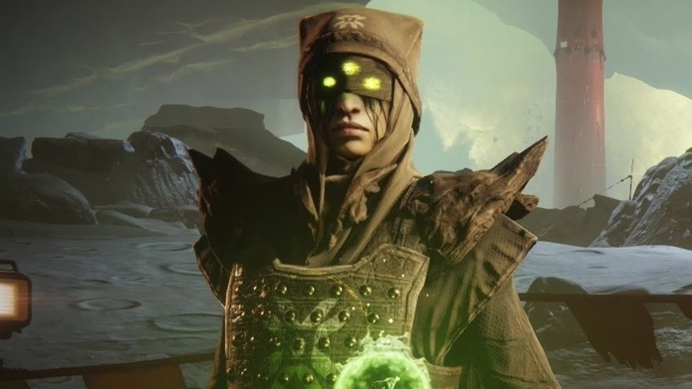

Suite à la mort de Cropta, le Dieu-Cheavlier de la Ruche, les Gardiens se croyaient enfin débarassés de la
Ruche dans le système. Mais la mort de ce dernier n'a fait qu'empirer les choses. Oryx, le Roi des Corrompus,
a voyagé jusque dans le système solaire pour venger la mort de son fils, Cropta.
Eris Morn vous informe qu'Oryx s'est déplacé avec son vaisseau-forteresse, le Cuirassé, et
cherche à envahir le système et éliminer les Gardiens, responsables de la mort de son fils. Les Eveillés
ont cherché à arrêter Oryx aux alentours de Saturne, mais leurs attaques sur le Cuirassé se sont montrées
inefficaces.
En réponse aux attaques, le Cuirassé a tiré une fois, éliminant tous les Eveillés présents. La Reine Mara Sov
vous indique que tout dépend de vous, désormais...
Le Commandant
Zavala

Zavala est le commandant actuel de l'Avant-Garde. Sévère et intransigeant, le seul objectif de Zavala est
de protéger l'humnaité au sein de la Dernière Cité contre toutes les menaces. Il supervise toutes les opérations
militaires des Gardiens, et a mené des Gardiens à la victoire lors de la Guerre des Corrompus et la Guerre Rouge.
vous informe qu'un signal de détresse Cabal est diffusé sur tous les canaux, et
qu'il provient d'une base sur Phobos. Vous partez donc sur Phobos pour enquêter sur le signal. Une fois
arrivés, vous remarquez que la base est à moitié détruite, et que les Cabals ne montrent aucun signe de vie. En avançant
dans la base,
Eris

Eris Morn est une ancienne Chasseuse et membre des Clandestins qui sert l'Avant-garde en tant qu'experte de
l'histoire de la Ruche. Elle est la seule survivante de la malheureuse escouade dirigée par elle-même et Eriana-3
qui a tenté d'assassiner Cropta sur la Lune, après le Grand Désastre.
vous dit qu'elle entend des murmures provenants du centre de cette base.
Au bout d'un moment, vous apercevez un Centurion Cabal essayant de fuir quelque chose. Soudainement, une faille apparaît,
et aspire le Centurion avant de disparaître. Une fois au centre de la base, Eris sent que les murmures sont de plus en plus
forts. Un nuage de fumée envahit la pièce, prenant la forme d'Oryx, et Eris vous informe que ce dernier est ici.
La pièce est rapidement envahie de combattants que vous n'avez jamais vu auparavant. N'ayant aucune idée de comment les
éliminer, vous prenez la fuite et retournez à la Dernière Cité. Sur le chemin, Eris vous dit que les ennemis que vous avez
vu sont des Corrompus, et qu'ils ont été créés par Oryx.
Vous assistez à un briefing avec l'Avant-Garde, ainsi qu'Eris Morn. Eris indique à tout le monde qu'Oryx
est venu se venger de la mort de son fils Cropta, et que son Cuirassé s'est installé dans les anneaux de Saturne. Il a aussi
envoyé ses 'Corrompus' partout dans le système. L'Avant-Garde propose de s'infiltrer dans le Cuirassé, mais Zavala fait
remarquer que les Éveillés ont été anéantis par les armes du Cuirassé. Soudainement,
Cayde-6
Célèbre explorateur et aventurier dans sa jeunesse, Cayde-6 est un Exo et Avant-garde des Chasseurs.
Après l'assassinat d'Andal Brask par Taniks, le Balafré, que Cayde était censé avoir déjà tué, ce dernier a pris le
poste de son ami à la Tour, même s'il déteste être coincé dans la paperasse et ne pas pouvoir partir en mission.
quitte la pièce et prétend devoir vérifier un vaisseau.
Vous rejoignez Cayde, et il vous envoie discrètement rechercher un module furtif pour vous infiltrer dans le Cuirassé. Il
vous indique que ce module se situe au sommet d'un vaisseau colonisateur dans le Cosmodrome. Au fur et à mesure que vous
progressez dans le vaisseau colonisateur, vous remarquez que les Corrompus sont déjà présents sur Terre. Vous arrivez au
sommet du vaisseau, et les Corrompus ont déjà envahi toute la pièce. Une fois éliminés, vous remarquez une cache suspecte
au centre de la pièce. Vous l'ouvrez, et vous découvrez une pile de modules furtifs. Vous les prenez, et les ramnez au hangar
de la Dernière Cité pour les installer.
Vous êtes prêts à partir, mais Zavala a interdit tout départ de vaisseau, car selon lui, les Gardiens doivent protéger la
Dernière Cité, et non infilter le Cuirassé. Cayde vous fait partir, malgré les interdictions de Zavala. Une fois arrivés
proche du Cuirassé, vous activez le module furtif. Mais en se rapprochant du Cuirassé, le module furtif se désactive, et
vous naviguez désormais juste devant le canon du vaisseau. Vous vous demandez si les Corrompus peuvent vous voir, et en
voyant le canon charger, vous obtenez vite la réponse. Vous foncez vers l'intérieur du Cuirassé et réussissez à vous
téléporter de justesse.
Une fois à l'intérieur, vous cherchez les sources d'énergies qui alimentent les armes du Cuirassé et vous les détruisez. Une
fois les armes désactivées, il vous faut encore poser une balise de téléportation pour que d'autres Gardiens puissent vous
rejoindre. Sur le chemin vous remarquez une immense brèche dans le Cuirassé, et un peu plus loin, un vaisseau Cabal, des mêmes
couleurs que la base Cabale située sur Phobos. Une fois la balise posée, vous retournez à la Tour.
Vous retournez donc sur le Cuirassé pour chercher des indices sur Oryx. Zavala vous informe que les protocoles Cabals les
obilgent à détruire tout vaisseau s'étant crashé, donc le vaisseau Cabal que vous aviez remaqué auparavant doit forcément cacher
quelque chose. En scannant le vaisseau, votre Spectre vous dit qu'il y a assez d'énergie dans le vaisseau pour qu'il puisse
décoller. Ils l'ont donc transformé en base d'opérations. En cherchant dans les consoles du vaisseau, vous trouvez comment
atteindre Oryx, qui se situe au centre du Cuirassé, uniquement accessible via un portail. Vous apprenez aussi qu'une équipe de
Cabals est en route vers ce portail, vous décidéz de les suivre.
Une fois arrivés au portail, vous trouvez un moyen de l'ouvrir, et des Esclaves de la Ruche sortent de ce portail sans s'arrêter.
Zavala vous dit de foncer à travers le portail, vous foncez, mais rien ne se passe. Le portail se referme, et Eris vous dit que
seul un Ascendant de la Ruche peut passer à travers ces portails.
Il vous faut maintenant devenir un Ascendant de la Ruche pour franchir ce portail, mais comment ? Eris vous fait part de son
idée: s'infiltrer dans le monde du trône de Cropta, le Trône de l'Ame Suprême, pour voler
l'âme de Cropta et ainsi devenir Ascendant. Vous vous rendez donc sur la Lune, dans le Gouffre des Enfers,
pour retourner dans la pièce ou vous aviez interrompu le rituel de résurrection de Cropta. Une fois à l'intérieur,
Baxx, Gardien du Tombeau, un Ogre de la Ruche, est présent pour vous arrêter.
Vous êtes sur le point de l'éliminer quand soudainement, une faille corrompue apparaît derrière Baxx, et l'aspire. Vous
profitez de ce moment pour récupérer un fragment du cristal contenant l'âme de Cropta, mais ce dernier est malheurseusement vide.
Vous vous apprêtez à repartir quand un Ogre Corrompu apparaît devant vous, et ce n'est autre que Baxx, qui a été corrompu par
Oryx et envoyé pour vous éliminer. Vos attaques semblent s'avérer inefficaces contre lui, vous décidez donc de
vous enfuir. Il vous faut maintenant remplir le cristal avec l'âme de Cropta, mais il vous devez passer inaperçu...
Pour s'emparer de l'âme de Cropta sans être remarqué, vous aurez besoin d'une technologie d'invisibilité, qui se situe dans le
bunker de l'Esprit Tutélaire Raspoutine, dans le Cosmodrome. Eris vous alerte que Raspoutine
ne vous laissera pas rentrer sans motif valide, mais lorsque vous approchez de la porte principale, cette dernière s'ouvre
immédiatement. Une fois à l'intérieur, vous remarquez que les Corrompus sont déjà à l'intérieur, et qu'ils cherchent à détruire
l'Esprit Tutélaire.
Vous vous frayez un chemin jusqu'à la salle de contrôle, et vous éliminez tous les Corrompus présents. Une fois éliminés, vous
inspectez la console principale, qui contient la technologie que vous cherchiez. Vous êtes désormais prêts à remplir le cristal
de l'âme de Cropta.
Vous retournez dans le Gouffre des Enfers, cette fois-ci dans le Trône de l'Ame Suprême, pour voler l'âme de Cropta et atteindre Oryx dans son Cuirassé. Vous activez votre technologie d'invisibilité, et vous faufilez à travers le monde du trône.
Plus vous avancez, plus vous remarquez une forte présence de la Ruche. Eris vous informe que la Ruche est en pleine
cérémonie mortuaire. Vous pénétrez dans la salle ou vous et votre escouade aviez éliminé Cropta, et vous identifiez une
tombe entourée de fumée verte. Vous apercevez cependant que la tombe est entourée de 3 Sirènes de la Mort,
des Prêtresses capables d'anéantir quiconque écoutera leur chant.
Vous vous faufilez discrètement derrière la tombe de Cropta, en évitant les Sirènes de la Mort, et placez le cristal en-dessous.
Le cristal se remplit, et commence à émettre une lumière verte. Une fois rempli, l'énergie du cristal perturbe votre technologie
de camouflage, et vous apparaîssez soudainement aux yeux de tous les membres de la Ruche présents. Les membres de la Ruche se
replient, et la salle est vite envahie par les Corrompus.
Votre Spectre essaie de vous téléporter hors du monde du trône, mais en vain. Vous apercevez devant vous deux portails
Corrompus, laissant apparaître Baxx, Main d'Oryx, ainsi que Ta'aun, Main d'Oryx, le Valus
responsable du crash du vaisseau Cabal dans le Cuirassé.
Vous êtes rapidement débordés par les forces corrompues, quand vous
entendez des murmures dans votre tête. Les murmures s'intensifient, et un flash blanc vous aveugle. Quand vous rouvrez les
yeux, vous êtes devant l'entrée du monde du trône, et Eris vous raconte qu'elle vous a sorti d'ici avec un sortilège de la
Ruche. Vous vous précipitez vers la sortie avec le cristal chargé.
Vous retournez donc sur le Cuirsassé, et vous vous dirigez vers le portail qui vous a précédemment repoussé. Vous éliminez les
membres de la Ruche qui gardent le portail, et ce dernier sent l'âme de Cropta que vous possédez. Vous essayez de franchir le
portail, et vous vous retrouvez dans un endroit inconnu. Cayde-6 vous demande d'envoyer vos coordonnées pour envoyer d'autres
Gardiens en renfort, mais votre Spectre est incapable de fournir des coordonnées. Vous avancez prudemment et vous entrez dans
une grande salle ou se situe un grand portail, éteint. Soudainement, vous entendez Oryx, et ce dernier juge que vous n'êtes pas
digne de l'affronter. Le portail en face de vous s'ouvre, et deux Corrompus en sortent.
Ces deux corrompus ne sont autres que Baxx, Main d'Oryx et Ta'aun, Main d'Oryx, qui étaient présents lorsque vous avez volé
l'âme de Cropta. Après un combat acharné, vous éliminez les deux Mains d'Oryx, et le portail est déverouillé. Une fois le
portail traversé, vous apercevez une grande porte de l'autre côté d'un immense gouffre, et vous entendez Oryx de nouveau, et
il vous provoque en duel suite à la mort de ses deux champions. Vous finissez par arriver de l'autre côté du gouffre, vous ouvrez
la grande porte, et il se tient devant vous.
Vous faites désormais face à Oryx, le Roi des Corrompus, prêt à 'terminer ce que son fils a commencé'. Avant
l'affontement, ce dernier fait appel aux Ténèbres, vos capacités de Lumière sont donc désactivées. Après un
combat long et intense, Oryx est affaibli, et lance l'ultime assaut en brandissant une épée de la Ruche. Vous lui tirez dessus
avant qu'il ne vous atteigne, et Oryx s'effondre au sol. Il plante sont épée dans le sol, tente de se relever, mais en vain.
De sa main émane de l'énergie Corrompue, et il génère un orbe de Corruption, qu'il plante dans son corps. Il se tord dans tous
les sens, et dans un rire maléfique, il disparaît. Eris vous remercie pour votre aide dans cette mission, mais vous savez tous
les deux qu'Oryx n'est pas définitivement mort.
Avec l'arrivée d'Oryx dans le système solaire, un gigantesque vaisseau de la Ruche a été aperçu dans les anneaux de Saturne. Les Gardiens ont comme objectif de s'infiltrer à l'intérieur de cette forteresse volante et de déjouer les plans du Roi des Corrompus.
Abritant son monde du trône, et construit à partir de la chair du Dieu Ver Akka, le Cuirassé est le vaisseau-forteresse d'Oryx, depuis lequel il a envoyé ses Corrompus envahir tout le système. Suite à l'attaque inefficace de la Reine Mara Sov et des Éveillés du Récif, Eris vous demande de monter à bord du Cuirassé et d'éliminer ce monstre qui prétent être 'Roi'.
Les rappports des éclaireurs de l'Avant-Garde n'ont signalé aucun nouvel ennemi dans le système solaire. En revanche, il semble se passer quelque chose aux alentours de Saturne...
AUCUN NOUVEL ENNEMI N'A ÉTÉ DÉCOUVERT.
Suite à l'arrivée d'Oryx dans le système solaire, une toute nouvelle armée voit le jour. Elle est constituée de toutes les factions ennemies connues: Vex, Ruche, Déchus et Cabals. Ils n'obéissent qu'à un seul et unique maître.
UNE NOUVELLE FACTION ENNEMIE A ÉTÉ DÉCOUVERTE SUR SATURNE. VOIR LES CORROMPUS.
Avec la découverte du Cuirassé sur Saturne, de nouvelles menaces ont été identifiées, et l' Avant-Garde a mis à disposition des Gardiens quatre nouveaux Assauts.
Détruire le Cuirassé d'Oryx ne serait pas une mauvaise chose... sauf que sa destruction pourrait condamner le
système solaire.
Les Gardiens ont donc pour objectif d'infiltrer le Cuirassé et d'éliminer Valus Tlu'urn et
Valus Mau'ual avant qu'ils fassent exploser le coeur du Cuirassé et ne déclenchent une réaction en chaîne
qui détruirait toutes les planètes du système.
Privé de lumière et enfermé depuis des milliers d'années dans les profondeurs du Cuirassé pour avoir défié
Oryx, Alak-Tul, la Lame Noire , se prépare à prendre le trône suite à la mort de ce dernier.
La mission des Gardiens est de s'aventurer dans les geôles du Cuirassé et d'éliminer Alak-Tul dans sa cellule avant qu'il
ne prenne la place d'Oryx.
L'Esprit Tutélaire Raspoutine a envoyé un message d'alerte à tous les Gardiens: un groupe de Déchus est
parvenu à entrer dans son bunker au Cosmodrome et la sécurité de la Dernière Cité est
compromise.
Les Gardiens doivent entrer dans le bunker de l'Esprit Tutélaire et éliminer S.A.B.R.E. 2, un collecteur
chargé de pirater les systèmes de défense du bunker.
Les Vex pleurent toujours la perte de Sekrion, Esprit du Nexus. Mais pour les Vex, le temps est relatif.
Quand un puissant Esprit est perdu, l'Esprit Réparateur est invoqué. Les Vex ont invoqué ce dernier pour faire renaître Sekrion.
L'Objectif des Gardiens est de s'infiltrer dans le repaire de Theosyion, Esprit Réparateur avant qu'il ne
ramène Sekrion à la vie.
L'Avant-Garde appelle tous les Gardiens disponibles à se rendre sur les anneaux de Saturne pour une mission de la plus haute importance. Préparez-vous, vous devrez affronter les membres d'élite de la Ruche et des Corrompus.
Oryx a été vaincu, mais Eris sent encore sa présence dans le Cuirassé. Il faudra donc retourner dans le Cuirassé pour
l'éliminer dans son monde du trône.
Les Gardiens devront retourner sur le Cuirassé, et trouver un moyen d'atteindre le monde du trône d'Oryx et de l'éliminer
pour de bon.
Vous ne pourrez pas utiliser le portail que vous aviez utilisé la première fois, il vous faudra trouver
un autre chemin.
Cependant, atteindre Oryx ne sera pas chose aisée. Le chemin menant à son monde du trône est lourdement
gardé par ses chamions les plus puissants.
Dans Destiny, un Raid est composé de plusieurs étapes. Chaque étape possède une mécanique de jeu bien précise
qui est nécessaire à sa complétion.
Si vous souhaitez découvrir les mécaniques de ce Raid, cliquez ici.